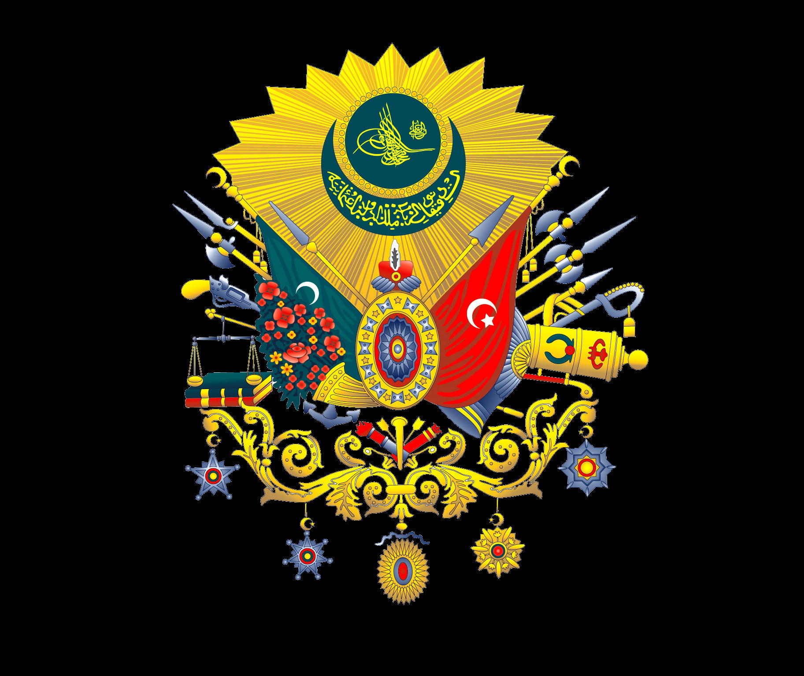

<!DOCTYPE html>
<html lang="en">
<head>
    <meta charset="UTF-8">
    <title>Html</title>

<!--    <style>-->

<!--.black{-->
<!--    background: black;-->
<!--}-->
<!--.white{-->
<!--    background: cyan;-->
<!--}-->
<!--    </style>-->


    <script>
      //   // var name = "Mark";
      //   // var b1 = "ano";
      //   // //
      //   // var anomno
      //   // alert(name);
      //   // alert(b1);
      // /**/


   /*     var v1 =3;
        var v2 =2;
      var v3 = v2++ + --v1 - v2++ + v2;
                // 2       2     3     4
        alert (v3);*/

        // var a1 = 6;
        // var a2 = 10;
        // var a3 = 4;
        //
        // var a4 = a1++ + a3-- + a2 - a1 + ++a3;
        //          // 6      4      10    7     4 =
        //        // alert(a4)
        //
        // var s1 = 8;
        // var s2 = 4;
        // var s3 = 7;
        //
        // var s4 = s1++ + --s3 + s2--;
        //          // 8     +  6   +  4 = 18
        // alert (s4)

        // var firstname = (prompt ("firstname", "Sabir"));
        // var lastname = (prompt ("lastname" ,"Ali"));
        // var fullname = (firstname + " " +lastname);
        //
        // alert(fullname)

//         var me = Number(prompt ("input"));
//         var fr = Number(prompt ("input2"));
//         var re = me + fr;
//       alert(re);
//         var re1 = me - fr;
//         alert(re1);
//         var re2 = me * fr;
//         alert(re2);
//         var re3 = me / fr;
//         alert(re3)
//
// alert( re + "." + re1 + "," + re2 + "," + re3)
//
//       var r = (0);
// var x  = prompt("3 + 3 = 6");
//
//         if (x === "true"){
//           ++r
//         }
//       var x1  = prompt("3 + 1 = 6");
//
//       if (x1 === "false"){
//      ++r
//       }
//
//       var x3  = prompt("5 / 5 = 1");
//
//       if (x3 === "true"){
//           ++r
//       }
//
//       var x4  = prompt("3 * 1 = 3");
//
//       if (x4 === "true"){
//           ++r
//       }
//       var x5  = prompt("3 % 10 = 4");
//
//       if (x5 === "false"){
//           ++r
//       }
//       var x6  = prompt("3 + 3 > 8");
//
//       if (x6 === "false"){
//           ++r
//       }
//       var x7  = prompt("8 < 11");
//       if (x7 === "true"){
//           ++r
//       }
//       var x8  = prompt(" 18 ≠ 81 ");
//       if (x8 === "true"){
//           ++r
//       }
//       var x9  = prompt(" 18 ≠ 9 * 2 ");
//       if (x9 === "false"){
//           ++r
//       }
//       var x10  = prompt(" 3 / 3 = 5 / 5 ");
//       if (x10 === "true"){
//           ++r
//       }
//
//       alert(r +"/" +"10")
//
//         var a1 = Number(prompt ());
//         var a3 = Number(prompt ());
//       var a2 = prompt ();
//
//
//         if (a2 === "+") {
//             alert (a1 + a3)
//
//         }
//         else if
//         (a2 === "-") {
//            alert (a1 - a3)
//         }
//         else if (a2 === "*"){
//             alert(a1 * a3)
//         }
//         else if (a2 === "/"){
//            alert (a1 / a3)
//         }
//         else {
//             alert("Error");
//         }


//         var full = Number(prompt ("Total marks"));
      //         var obtain = Number(prompt ( "Obtain marks"));
      // var percent = ((obtain / full) * 100);
      // alert (percent + "%");
      //
      //         if (percent >= 80){
      //            alert ("Grade A+")
      //         }
      //         else if (percent >= 70){
      //             alert ("Grade A")
      //         }
      //         else if (percent >= 60){
      //             alert ("Grade B")
      //         }
      //         else if (percent >= 50){
      //             alert("Grade C")
      //         }
      //         else if (percent >= 50){
      //             alert("Grade D")
      //         }
      //         else (alert("failed"))

      //
      //
      //
      //
      //
      //
//
//         var cntry = prompt("What is your country name");
//
//  if (cntry === "Pakistan") {
//      var ck = confirm("Is your city Karachi?");
//
//      if (confirm("Is your city Karachi?")) {
//          alert("Welcome to Karachi");
//      }
//      else if (ck === false) {
//          var cl = confirm("Is your city Lahore?");
//      }
//      if (cl === true) {
//          alert("Welcome to Lahore")
//      }
//      else if (cl === false) {
//          var ci = confirm("Is your city Islamabad?");
//      }
//      if (ci === true) {
//          alert("Welcome to Islamabad")
//      }
//      else if (ci === false) {
//          var cq = confirm("Is your city Quetta?");
//      }
//      if (cq === true) {
//          alert("Welcome to Quetta")
//      }
//      else if (cq === false) {
//          var cp = confirm("Is your city Peshawar?");
//      }
//      if (cp === true) {
//          alert("Welcome to Peshawar")
//      }
//      else if (cp === false) {
//          var ch = confirm("Is your city Hyderabad?");
//      }
//      if (ch === true) {
//          alert("Welcome to Hyderabad")
//      }
//      else var pc = prompt("Which is your city in Pakistan");
//      alert("Welcome to " + pc)
//  }
//
//       if (cntry === "Afghanistan"){
//
//          var ak = confirm ("Is your city Kabul?");
//       if (ak === true){
//           alert ("Welcome to Kabul")
//       }
//        else if (ak === false){
//           var akn =confirm("Is your city Kandahar?")
//        }
//        if (akn === true){
//            alert ("Welcome to Kandahar")
//        }
//        else if(akn === false){
//            var ah = confirm("Is your city Herat?")
//        }
//        if (ah === true){
//            alert ("Welcome to Herat")
//        }
//        else if(ah === false){
//            var am = confirm("Is your city Mazār-i-Sharīf?")
//        }
//        if ( am === true) {
//            alert ("Welcome to Mazār-i-Sharīf")
//        }
//        else if (am === false){
//            var aj = confirm("Is your city Jalalabad?")
//        }
//       if (aj === true){
//           alert("Welcome to Jalalabad")
//       }
//       else if (aj === false){
//           var ag = confirm("Is your city Ghazni?")
//       }
//       if (ag === true){
//           alert("Welcome to Ghazni")
//       }
//       else if (ag === false){
//           var at = confirm("Is your city Taloqan?")
//       }
//       if (at === true){
//           alert("Welcome to Taloqan")
//       }
//       else if (at === false){
//           var af = confirm("Is your city Farah?")
//       }
//       if (af === true){
//           alert("Welcome to Farah")
//       }

//
//
// if (cntry === "China") {
//     var chh = confirm("Is your city Hong Kong");
//     if (chh === true) {
//         alert("Welcome to Hong Kong")
//     }
//     else if (chh === false) {
//         var chb = confirm("Is your city Beijing?")
//     }
//     if (chb === true) {
//         alert("Welcome to Beijing")
//     }
//     else if (chb === false) {
//         var chc = confirm("Is your city Chongqing?")
//     }
//     if (chc === true) {
//         alert("Welcome to Chongqing")
//     }
//     else if (chc === false) {
//         var chs = confirm("Is your city Shanghai?")
//     }
//     if (chs === true) {
//         alert("Welcome to Shanghai")
//     }
//     else if (chs === false) {
//         var cht = confirm("Is your city Tianjin?")
//     }
//     if (cht === true) {
//         alert("Welcome to Tianjin")
//     }
//
//
// }
//       if (cntry === "Iran") {
//           var it = confirm("Is your city Tehran");
//           if (it === true) {
//               alert("Welcome to Tehran")
//           }
//           else if (it === false) {
//               var im = confirm("Is your city Mashhad?")
//           }
//           if (im === true) {
//               alert("Welcome to Mashhad")
//           }
//           else if (im === false) {
//               var ii = confirm("Is your city Isfahan?")
//           }
//           if (ii === true) {
//               alert("Welcome to Isfahan")
//           }
//           else if (ii === false) {
//               var ik = confirm("Is your city Karaj?")
//           }
//           if (ik === true) {
//               alert("Welcome to Karaj")
//           }
//           else if (ik === false) {
//               var ik1 = confirm("Is your city Hamadan?")
//           }
//           if (ik1 === true) {
//               alert("Welcome to Hamadan")
//           }
//           else var ic = prompt("Which is your city in Iran");{
//
//           alert("Welcome to " + ic)
//
//       }}

<!--var a1 = [];-->
<!--        a1.push(prompt());-->
<!--        a1.push(prompt());-->
<!--        a1.push(prompt());-->
<!--        a1.push(prompt());-->
<!--        a1.push(prompt());-->
<!--        console.log(a1)-->


//       var o1 = ["Karachi" , "Lahore" , "Islamabad" , "Pishawer" , "Multan" , "Hydrabad" , "Gwader"];
//
//
// var o = o1[prompt()];
//
//       console.log(o);
//       alert(o)
//


      //
      // var re1 = prompt('value 1');
      // var re2 = prompt('Value 2');
      //
      // var cntry = ["China", "India" , "Pakistan","Iran" , "England" , "Newzealand" , "Afghanistan" , "Iraq" , "UAE" , "Qatar" , "America" , "South africa" , "Combodia" , "Nigeria"];
      // console.log(cntry);
      //
      //
      // cntry.splice(cntry.indexOf(re1),1,re2);
      // cntry.splice(cntry.indexOf(re2),1,re1);
      // console.log(cntry);


    </script>


    <script src="Poona.js"></script>


<!--    <link rel="stylesheet" href="../CSS1/stylesheet.css">-->

</head>
<body>
<!--<form action="http://www.example.com/profile.php">-->

<!--    <label>-->
<!--        <select name="lea" size="20">-->
<!--            <option value="guitar">Guitar</option>-->
<!--            <option value="drums">Drums</option>-->
<!--            <option value="keyboard">Keyboard</option>-->
<!--            <option value="bass">Bass</option>-->
<!--            <option value="bass">Bass</option>-->
<!--            <option value="bass">Bass</option>-->
<!--            <option value="bass">Bass</option>-->
<!--            <option value="bass">Bass</option>-->
<!--            <option value="bass">Bass</option>-->
<!--            <option value="bass">Bass</option>-->
<!--            <option value="bass">Bass</option>-->
<!--            <option value="bass">Bass</option>-->
<!--            <option value="bass">Bass</option>-->
<!--            <option value="bass">Bass</option>-->
<!--            <option value="bass">Bass</option>-->
<!--            <option value="bass">Bass</option>-->
<!--            <option value="bass">Bass</option>-->
<!--            <option value="bass">Bass</option>-->
<!--            <option value="bass">Bass</option>-->
<!--            <option value="bass">Bass</option>-->
<!--            <option value="bass">Bass</option>-->
<!--            <option value="bass">Bass</option>-->
<!--            <option value="bass">Bass</option>-->
<!--            <option value="bass">Bass</option>-->
<!--            <option value="bass">Bass</option>-->
<!--            <option value="bass">Bass</option>-->
<!--            <option value="bass">Bass</option>-->
<!--            <option value="bass">Bass</option>-->
<!--            <option value="bass">Bass</option>-->
<!--            <option value="bass">Bass</option>-->
<!--            <option value="bass">Bass</option>-->


<!--        </select>-->
<!--    </label>-->
<!--    <br>-->
<!--    <br>-->
<!--    <br>-->

<!--    <label>-->
<!--        <input type="text" name="email"/>-->
<!--    <input type="submit" name="subscribe" value="Subscribe" /> <br>-->
<!--        <input type="image" src="Images/peakpx.jpg" width="40" height="20" alt="Quisl"> <br>-->
<!--        <input type="submit" name="AS" value="SDHVSJ">-->

<!--        <button>
<!--                     width="18" height="36" /> Add</button>-->
<!--    </label>-->


<!--</form>-->


<!--<h1 id="h2" >List of sultans of the Ottoman Empire</h1 style ="display: inline">-->
<!--<p> <b>The sultans of the <a href="https://en.wikipedia.org/wiki/Ottoman_Empire" target="_">Ottoman Empire</a> </b> who were all members of the <a href="https://en.wikipedia.org/wiki/Ottoman_dynasty"target="_">Ottoman dynasty</a> , ruled over the transcontinental empire from its perceived inception in 1299 to its dissolution in 1922. At its height, the Ottoman Empire spanned an area from <a href="https://en.wikipedia.org/wiki/Hungary"target="_">Hungary</a>  in the north to <a href="https://en.wikipedia.org/wiki/Yemen"target="_">Yemen</a>  in the south, and from <a href="https://en.wikipedia.org/wiki/Algeria"target="_">Algeria</a>  in the west to <a href="https://en.wikipedia.org/wiki/Iraq"target="_">Iraq</a>  in the east. Administered at first from the city of <a href="https://en.wikipedia.org/wiki/S%C3%B6%C4%9F%C3%BCt"target="_">Söğüt</a>  since before 1280 and then from the city of <a href="https://en.wikipedia.org/wiki/Bursa"target="_">Bursa</a>  since 1323 or 1324, the empire's capital was moved to Adrianople (now known as <a href="https://en.wikipedia.org/wiki/Edirne"target="_">Edirne</a>  in English) in 1363 following its-->
<!--    <a href="https://en.wikipedia.org/wiki/Ottoman_conquest_of_Adrianople"target="_">conquest</a>  by <a href="https://en.wikipedia.org/wiki/Murad_I"target="_">MuradI</a>  , and then to Constantinople (present-day <a href="https://en.wikipedia.org/wiki/Istanbul"target="_">Istanbul</a> ) in 1453 following its conquest by <a href="https://en.wikipedia.org/wiki/Mehmed_the_Conqueror"target="_">Mehmed</a> The Ottoman Empire's <a href="https://en.wikipedia.org/wiki/List_of_sultans_of_the_Ottoman_Empire"target="_">Learn more</a></p>-->
<!--<h2> <ins>The first 5 Ottoman sultans</ins></h2>v-->
<!--<ol> <li><a href="https://en.wikipedia.org/wiki/Osman_I"target="_"> <h3>Osman I</h3></a></li>-->
<!--  &lt;!&ndash;  &ndash;&gt;-->
<!--    <p>Osman I or Osman Ghazi (Ottoman Turkish: عثمان غازى‎, romanized: ʿOsmān Ġāzī; Turkish: I. Osman or Osman Gazi; died 1323/4),[1][3] sometimes transliterated archaically as Othman, was the leader of the Kayi tribe and the founder of the Ottoman dynasty. The dynasty bearing his name later established and ruled the Ottoman Empire (first known as the Ottoman Beylik or Emirate). This state, while initially a small Turkmen[6] principality during Osman's lifetime, transformed into a world empire in the centuries after his death.[7] It existed until shortly after the end of World War I.-->

<!--        Owing to the scarcity of historical sources dating from his lifetime, very little factual information about Osman has survived. Not a single written source survives from Osman's reign.[8] The Ottomans did not record the history of Osman's life until the fifteenth century, more than a hundred years after his death.[9] Because of this, historians find it very challenging to differentiate between fact and myth in the many stories told about him.One historian has even gone so far as to declare it impossible, describing the period of Osman's life as a "black hole".<a href="https://en.wikipedia.org/wiki/Osman_I">learn more</a> </p>-->
<!--    <li> <a href="https://en.wikipedia.org/wiki/Orhan"target="_"> <h3>Orhan</h3></a></li>-->
<!--    <&lt;!&ndash;img src="Data/150px-Orhan_Gazi.jpg" alt="Orhan" /> &ndash;&gt;<p>Orhan Ghazi (Ottoman Turkish: اورخان غازی‎; Turkish: Orhan Gazi, also spelled Orkhan, c. 1281 – March 1362) was the second bey of the Ottoman Beylik from 1323/4 to 1362. He was born in Söğüt, as the son of Osman.-->

<!--        In the early stages of his reign, Orhan focused his energies on conquering most of northwestern Anatolia. The majority of these areas were under Byzantine rule and he won his first battle at Pelekanon against the Byzantine Emperor Andronikos III Palaiologos. Orhan also occupied the lands of the Karasids of Balıkesir and the Ahis of Ankara.-->

<!--        A series of civil wars surrounding the ascension of the nine-year-old Byzantine emperor John V Palaiologos greatly benefited Orhan.[citation needed] In the Byzantine civil war of 1341–1347, the regent John VI Kantakouzenos married his daughter Theodora to Orhan and employed Ottoman warriors against the rival forces of the empress dowager, allowing them to loot Thrace. In the Byzantine civil war of 1352–1357, Kantakouzenos used Ottoman forces against John V, granting them the use of a European fortress at Çimpe around 1352.[2][3] A major earthquake devastated Gallipoli (modern Gelibolu) two years later, after which Orhan's son, Süleyman Pasha, occupied the town, giving the Ottomans a strong bridgehead into mainland Europe <a href="https://en.wikipedia.org/wiki/Orhan">Learn more</a></p>-->
<!--    <li><a href="https://en.wikipedia.org/wiki/Murad_I"target="_"><h3>Murad I</h3></a></li>-->
<!--    &lt;!&ndash;&ndash;&gt; <p>Murad I (Ottoman Turkish: مراد اول‎; Turkish: I. Murad, Murad-ı Hüdavendigâr (nicknamed Hüdavendigâr, from Persian: خداوندگار‎, romanized: Khodāvandgār, lit. 'the devotee of God' – meaning "sovereign" in this context); 29 June 1326 – 15 June 1389) was the Ottoman Sultan from 1362 to 1389. He was a son of Orhan Gazi and Nilüfer Hatun. Murad I came into the throne after his elder brother Süleyman Pasha's death.-->

<!--        Murad I conquered Adrianople, renamed it to Edirne,[2] and in 1363 made it the new capital of the Ottoman Sultanate.[3] Then he further expanded the Ottoman realm in Southern Europe by bringing most of the Balkans under Ottoman rule, and forced the princes of Serbia and Bulgaria as well as the East Roman emperor John V Palaiologos to pay him tribute. Murad I administratively divided his sultanate into the two provinces of Anatolia (Asia Minor) and Rumelia <a href="https://en.wikipedia.org/wiki/Murad_I">Learn more</a></p>-->

<!--    <li> <a href="https://en.wikipedia.org/wiki/Bayezid_I"target="_"><h3>Bayezid I</h3></a></li>-->
<!--   &lt;!&ndash; &ndash;&gt; <p>Bayezid I (Ottoman Turkish: بايزيد اول‎, Turkish: I. Bayezid), also known as Bayezid the Thunderbolt (Ottoman Turkish: یلدیرم بايزيد‎, Turkish: Yıldırım Bayezid; c. 1360 – 8 March 1403)[2] was the Ottoman Sultan from 1389 to 1402. He was the son of Murad I[3][4] and Gülçiçek Hatun. He built one of the largest armies in the known world at the time and unsuccessfully besieged Constantinople. He adopted the title of Sultan-i Rûm, Rûm being an old Islamic name for the Roman Empire.[5] He decisively defeated the Crusaders at Nicopolis (in modern Bulgaria) in 1396, and was himself defeated and captured by Timur at the Battle of Ankara in 1402 and died in captivity in March 1403, triggering the Ottoman Interregnum<a href="https://en.wikipedia.org/wiki/Bayezid_I">Learn more</a></p>-->
<!--    <li> <a href="https://en.wikipedia.org/wiki/Mehmed_the_Conqueror" target="_blank"><h3>Mehmed II</h3></a></li>-->
<!--  &lt;!&ndash;   &ndash;&gt;<p>Mehmed II (Ottoman Turkish: محمد ثانى‎, romanized: Meḥmed-i s̱ānī; Turkish: II. Mehmed, pronounced [icinˈdʒi ˈmehmed]; 30 March 1432 – 3 May 1481), commonly known as Mehmed the Conqueror (Ottoman Turkish: ابو الفتح‎, romanized: Ebū'l-Fetḥ, lit. 'the Father of Conquest'; Turkish: Fatih Sultan Mehmed), was an Ottoman sultan who ruled from August 1444 to September 1446, and then later from February 1451 to May 1481. In Mehmed II's first reign, he defeated the crusade led by John Hunyadi after the Hungarian incursions into his country broke the conditions of the truce Peace of Szeged. When Mehmed II ascended the throne again in 1451 he strengthened the Ottoman navy and made preparations to attack Constantinople. At the age of 21, he conquered Constantinople (modern-day Istanbul) and brought an end to the Byzantine Empire.-->

<!--        After the conquest Mehmed claimed the title "Caesar" of the Roman Empire (قیصر‎ روم Qayser-i Rûm), based on the fact that Constantinople had been the seat and capital of the surviving Eastern Roman Empire since its consecration in 330 AD by Emperor Constantine I.[4] The claim was only recognized by the Patriarchate of Constantinople. Nonetheless, Mehmed II viewed the Ottoman state as a continuation of the Roman Empire for the remainder of his life, seeing himself as "continuing" the Empire rather than "replacing" it. <a href="https://en.wikipedia.org/wiki/Mehmed_the_Conqueror">Learn more</a> </p>-->

<!--&lt;!&ndash;</ol>&ndash;&gt;-->
<!--<table border="1">-->
<!--    <tr>-->
<!--        <td>A</td>-->
<!--        <td>B</td>-->
<!--        <td>C</td>-->
<!--        <td>D</td>-->
<!--        <td>E</td-->
<!--    </tr>-->

<!--    <tr><td colspan="2">F</td>-->

<!--        <td>H</td>-->
<!--        <td>I</td>-->
<!--        <td>J</td></tr>-->
<!--    <tr>-->
<!--        <td>K</td>-->
<!--        <td>L</td>-->
<!--        <td>M</td>-->
<!--        <td>N</td>-->
<!--        <td>O</td>-->
<!--    </tr>-->
<!--    <tr><td>P</td>-->
<!--        <td>Q</td>-->
<!--        <td>R</td>-->
<!--        <td>S</td>-->
<!--        <td>T</td>-->

<!--    </tr>-->

<!--</table>-->
<!--<br>-->
<!--<br>-->
<!--<br>-->
<!--<br>-->
<!--<br>-->
<!--<br>-->
<!--<br>-->

<!--<table border="1">-->
<!--    <tr><td rowspan="3">Day</td>-->
<!--        <td colspan="5">Seminar</td>-->
<!--    </tr>-->
<!--    <tr><td colspan="2">Schedule</td> <td colspan="3" rowspan="2">Topic</td>-->
<!--    </tr>-->
<!--    <tr><td>Begin</td><td>End</td></tr>-->
<!--    <tr><td rowspan="2">Monday</td> <td rowspan="2">8:00 A.M</td> <td rowspan="2">5:00 P.M</td> <td colspan="3">Introduction to XMK</td></tr>-->
<!--    <tr><td colspan="3">Validity:DTD and Relax NG</td></tr>-->
<!--    <tr><td rowspan="3">Tuesday</td> <td>8:00A.M</td> <td>11:00 A.M</td> <td rowspan="2" colspan="3">XPath</td></tr>-->
<!--    <tr> <td>11:00 A.M</td> <td>2:00 P.M</td></tr>-->
<!--    <tr><td>2:00 P.M</td> <td>5:00 P.M</td> <td colspan="3" rowspan="1">XSL Transformation</td></tr>-->
<!--    <tr><td>Wednesday</td> <td>8:00 A.M</td> <td>12:00 P.M</td><td colspan="3">XSL Formatting Objects</td></tr>-->
<!--</table>-->
<!--<br>-->
<!--<br>-->
<!--<br>-->
<!--<form>l-->
<!--    <lable> </lable>-->
<!--    <input type="email" placeholder="example@gmail.com""><br><br><br><br>-->
<!--    <br> <input type="hidden">-->
<!--</form>-->
<!--<br>-->
<!--<br><table border="1" width="400" cellpadding="10" cellspacing="5">-->
<!--    <tr>-->
<!--        <th width="150"></th>-->
<!--        <th>Withdrawn</th>-->
<!--        <th>Credit</th>-->
<!--        <th width="150">Balance</th>-->
<!--    </tr>-->
<!--    <tr>-->
<!--        <th>January</th>-->
<!--        <td>250.00</td>-->
<!--        <td>660.50</td>-->
<!--        <td>410.50</td>-->
<!--    </tr>-->
<!--    <tr>-->
<!--        <th>February</th>-->
<!--        <td>135.55</td>-->
<!--        <td>895.20</td>-->
<!--        <td>1170.15</td>-->
<!--    </tr> </table>-->
<!--<br>-->
<!--<br>-->
<!--<br>-->
<!--<br><form action="file:///C:/Users/User/Documents/duckett%20(1).pdf"-->
<!--          method="get">-->
<!--    <p>This is where the form controls will appear.-->
<!--    </p>-->
<!--</form>-->
<!--<br>-->
<!--<br>-->
<!--<br>-->
<!--<br>-->
<!--<br>-->
<!--<br>-->
<!--<br>-->
<!--<br>-->
<!--<br>-->
<!--<br>-->
<!--<br>-->
<!--<br>-->
<!--<br>-->
<!--<br>-->
<!--<br>-->
<!--<br>-->
<!--<br>-->
<!--<br>-->
<!--<br>-->
<!--<br>-->
<!--<br>-->
<!--<br> <h1 id="h">Welcome to pinterest</h1>-->
<!--<br>-->
<!--<form id="form1">-->
<!--    <input type="email" placeholder="Email"> <br>-->
<!--    <br>-->
<!--    <input type="password" placeholder="Password">-->
<!--    <h6><a href="http://localhost:63342/html.index.html/html.index.html?_ijt=93ls68d606grcvvk0mv4s1kap">Forgot your password</a></h6>-->
<!--    <input type="button" value="Log in" width="20px" id="button1">-->
<!--    <h6>OR</h6>-->
<!--    <input type="button" value="Continue with Facebook" id="button2"> <br>-->
<!--    <br>-->
<!--    <input type="button" value="Continue with Google" id="button3">-->

<!--</form>-->
<!--<br>-->
<!--<br>-->
<!--<br> <a href="dfhfgmghjghjnghhghhdf">ADG</a>-->
<!--<br>-->
<!--<br>-->
<!--<br>-->
<!--<br>-->
<!--<br>-->
<!--<br> <h1 id="anomno1">Anomno</h1>-->
<!--<button id="doraemon">Doraemon</button>-->
<!--<br>-->
<!--&lt;!&ndash;    <button id="doraemon1">Doraemon</button>&ndash;&gt;-->

<!--<br>-->
<!--<br>-->
<!--<br>-->
<!--<br>-->
<!--<br>-->
<!--<br>-->
<!--<br> <div id="box1">-->
<!--    <p>-->
<!--        List of sultans of the Ottoman Empire-->
<!--        The sultans of the Ottoman Empire who were all members of the Ottoman dynasty , ruled over the transcontinental empire from its perceived inception in 1299 to its dissolution in 1922. At its height, the Ottoman Empire spanned an area from Hungary in the north to Yemen in the south, and from Algeria in the west to Iraq in the east. Administered at first from the city of Söğüt since before 1280 and then from the city of Bursa since 1323 or 1324, the empire's capital was moved to Adrianople (now known as Edirne in English) in 1363 following its conquest by MuradI , and then to Constantinople (present-day Istanbul ) in 1453 following its conquest by Mehmed The Ottoman Empire's Learn more-->

<!--        The first 5 Ottoman sultans-->
<!--        Osman I-->
<!--        Osman Ghazi-->
<!--        Osman I or Osman Ghazi (Ottoman Turkish: عثمان غازى‎, romanized: ʿOsmān Ġāzī; Turkish: I. Osman or Osman Gazi; died 1323/4),[1][3] sometimes transliterated archaically as Othman, was the leader of the Kayi tribe and the founder of the Ottoman dynasty. The dynasty bearing his name later established and ruled the Ottoman Empire (first known as the Ottoman Beylik or Emirate). This state, while initially a small Turkmen[6] principality during Osman's lifetime, transformed into a world empire in the centuries after his death.[7] It existed until shortly after the end of World War I. Owing to the scarcity of historical sources dating from his lifetime, very little factual information about Osman has survived. Not a single written source survives from Osman's reign.[8] The Ottomans did not record the history of Osman's life until the fifteenth century, more than a hundred years after his death.[9] Because of this, historians find it very challenging to differentiate between fact and myth in the many stories told about him.One historian has even gone so far as to declare it impossible, describing the period of Osman's life as a "black hole".learn more-->

<!--        Orhan-->
<!--        Orhan-->
<!--        Orhan Ghazi (Ottoman Turkish: اورخان غازی‎; Turkish: Orhan Gazi, also spelled Orkhan, c. 1281 – March 1362) was the second bey of the Ottoman Beylik from 1323/4 to 1362. He was born in Söğüt, as the son of Osman. In the early stages of his reign, Orhan focused his energies on conquering most of northwestern Anatolia. The majority of these areas were under Byzantine rule and he won his first battle at Pelekanon against the Byzantine Emperor Andronikos III Palaiologos. Orhan also occupied the lands of the Karasids of Balıkesir and the Ahis of Ankara. A series of civil wars surrounding the ascension of the nine-year-old Byzantine emperor John V Palaiologos greatly benefited Orhan.[citation needed] In the Byzantine civil war of 1341–1347, the regent John VI Kantakouzenos married his daughter Theodora to Orhan and employed Ottoman warriors against the rival forces of the empress dowager, allowing them to loot Thrace. In the Byzantine civil war of 1352–1357, Kantakouzenos used Ottoman forces against John V, granting them the use of a European fortress at Çimpe around 1352.[2][3] A major earthquake devastated Gallipoli (modern Gelibolu) two years later, after which Orhan's son, Süleyman Pasha, occupied the town, giving the Ottomans a strong bridgehead into mainland Europe Learn more-->

<!--        Murad I-->
<!--        Murad I-->
<!--        Murad I (Ottoman Turkish: مراد اول‎; Turkish: I. Murad, Murad-ı Hüdavendigâr (nicknamed Hüdavendigâr, from Persian: خداوندگار‎, romanized: Khodāvandgār, lit. 'the devotee of God' – meaning "sovereign" in this context); 29 June 1326 – 15 June 1389) was the Ottoman Sultan from 1362 to 1389. He was a son of Orhan Gazi and Nilüfer Hatun. Murad I came into the throne after his elder brother Süleyman Pasha's death. Murad I conquered Adrianople, renamed it to Edirne,[2] and in 1363 made it the new capital of the Ottoman Sultanate.[3] Then he further expanded the Ottoman realm in Southern Europe by bringing most of the Balkans under Ottoman rule, and forced the princes of Serbia and Bulgaria as well as the East Roman emperor John V Palaiologos to pay him tribute. Murad I administratively divided his sultanate into the two provinces of Anatolia (Asia Minor) and Rumelia Learn more-->

<!--        Bayezid I-->
<!--        Bayezid I-->
<!--        Bayezid I (Ottoman Turkish: بايزيد اول‎, Turkish: I. Bayezid), also known as Bayezid the Thunderbolt (Ottoman Turkish: یلدیرم بايزيد‎, Turkish: Yıldırım Bayezid; c. 1360 – 8 March 1403)[2] was the Ottoman Sultan from 1389 to 1402. He was the son of Murad I[3][4] and Gülçiçek Hatun. He built one of the largest armies in the known world at the time and unsuccessfully besieged Constantinople. He adopted the title of Sultan-i Rûm, Rûm being an old Islamic name for the Roman Empire.[5] He decisively defeated the Crusaders at Nicopolis (in modern Bulgaria) in 1396, and was himself defeated and captured by Timur at the Battle of Ankara in 1402 and died in captivity in March 1403, triggering the Ottoman InterregnumLearn more-->

<!--        Mehmed II-->
<!--        Mehmed_II-->
<!--        Mehmed II (Ottoman Turkish: محمد ثانى‎, romanized: Meḥmed-i s̱ānī; Turkish: II. Mehmed, pronounced [icinˈdʒi ˈmehmed]; 30 March 1432 – 3 May 1481), commonly known as Mehmed the Conqueror (Ottoman Turkish: ابو الفتح‎, romanized: Ebū'l-Fetḥ, lit. 'the Father of Conquest'; Turkish: Fatih Sultan Mehmed), was an Ottoman sultan who ruled from August 1444 to September 1446, and then later from February 1451 to May 1481. In Mehmed II's first reign, he defeated the crusade led by John Hunyadi after the Hungarian incursions into his country broke the conditions of the truce Peace of Szeged. When Mehmed II ascended the throne again in 1451 he strengthened the Ottoman navy and made preparations to attack Constantinople. At the age of 21, he conquered Constantinople (modern-day Istanbul) and brought an end to the Byzantine Empire. After the conquest Mehmed claimed the title "Caesar" of the Roman Empire (قیصر‎ روم Qayser-i Rûm), based on the fact that Constantinople had been the seat and capital of the surviving Eastern Roman Empire since its consecration in 330 AD by Emperor Constantine I.[4] The claim was only recognized by the Patriarchate of Constantinople. Nonetheless, Mehmed II viewed the Ottoman state as a continuation of the Roman Empire for the remainder of his life, seeing himself as "continuing" the Empire rather than-->
<!--    </p>-->
<!--</div>-->
<!--<br>-->
<!--<br>-->
<!--<br>-->
<!--<br>-->
<!--<br>-->
<!--<br>-->
<!--<br>-->
<!--<br>-->
<!--<br>-->
<!--<br>-->
<!--<br>-->
<!--<br>-->
<!--<br>-->
<!--<br>-->
<!--<br>-->
<!--<br>d-->
<!--<br>-->
<!--<br>-->
<!--<br>-->
<!--<br>-->
<!--<br>-->
<!--<br>-->
<!--<br><a href="mailto:ssmmhazz@gmail.com">Contact us</a>-->
<!--&lt;!&ndash;<a href="tellto:03431011151">Phone</a>&ndash;&gt;-->


<!--<br>-->
<!--<br>-->
<!--<br>-->
<!--<br>-->

<!--<br>-->
<!--<br>-->
<!--<br>-->
<!--<br>-->
<!--<br>-->
<!--<br>-->
<!--<br>-->
<!--<br>-->
<!--<br>-->
<!--<br>-->
<!--<br>-->
<!--<br>-->
<!--<br>-->
<!--<br>-->
<!--<br>-->
<!--<br>-->
<!--<br>-->
<!--<br>-->
<!--<br>-->


</body>


</html>